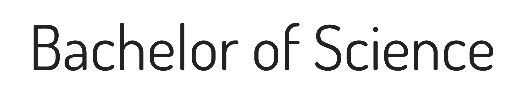
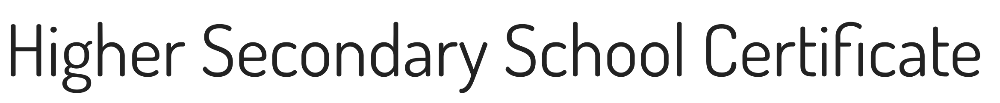
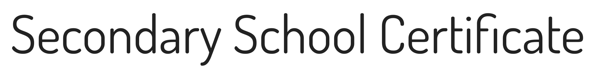

Education
The very first step towards acquiring the information, critical thinking,
empowerment, and skills needed to enhance the world around us.

March, 2017 to January, 2022Bachelor of Science (B.Sc) in Computer Science & Engineering
Ahsanullah University of Science and Technology
CGPA: 3.483 out of 4.00

June, 2014 to July, 2016Higher Secondary School Certificate (HSC) in Science
Birshreshtha Noor Mohammad Public College, Peelkhana, Dhaka, Bangladesh
GPA: 5.00 out of 5.00

January, 2012 to January, 2014Secondary School Certificate (SSC) in Science
Lakshmipur Adarsha Samad Government High School, Lakshmipur, Bangladesh
GPA: 5.00 out of 5.00